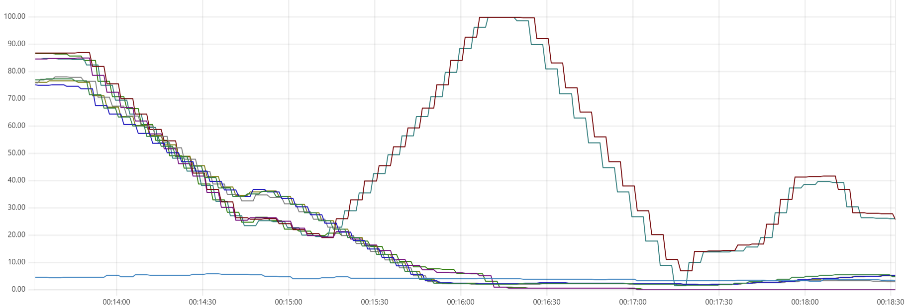
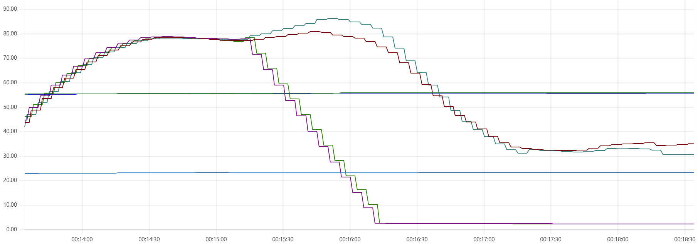

Capillaries should not crash. However, sometimes something like this happens.
In this example, two Capillaries daemon instances suddenly stop working, while two other instances acquire the stalled batches and complete the data processing. Before processing the stalled batches, the live daemons leave warnings in the log file and give those stalled batches another chance until the max_batch_processing_time timeout expires:
"will wait for another 102601ms until 120000ms timeout, some other instance may still be handling this batch"
This is a typical Prometheus view showing statistics from the daemons, Cassandra nodes, and the bastion instance.
CPU consumption:

Memory use:

Obviously, all involved VM instances are still alive - Prometheus continues collecting CPU and memory statistics. It is only the Capillaries daemon that dies, and an OOM (out-of-memory) error is a common cause. There are two common scenarios to investigate.
Read about the GOMEMLIMIT and GOGC environment variables. Capillaries daemons may allocate memory aggressively, and these settings can help the Go garbage collector perform more efficiently.
For example, the Capillaries sample deployment scripts set GOGC=100 (the default value) and GOMEMLIMIT=[75% of RAM] to leave some memory available for Python formula calculations. In mission-critical environments, these settings may need to be lowered further.
More information about Go garbage collector settings for Capillaries can be found in the “The Cassandra Dip” section of this post.
When performing Python calculations, the Capillaries daemon invokes multiple instance of the Python interpreter.
The screenshots above were taken from an environment with 8-CPU daemon VM instances, each running 24 worker threads. Therefore, each instance should be able to run up to 24 Python interpreters simultaneously.
This was not a problem while the Capillaries sample deployments used Ubuntu instances up to version 24.04, which ships with Python 3.12 by default. Ubuntu 26.04 introduces Python 3.14, and there are reports that the memory consumption model changed in Python 3.13, causing higher memory usage in some scenarios compared to Python 3.12.
Running
journalctl -k | grep -i "oom"
on the instance with a failed Capillaries daemon shows:
May 18 23:47:07 ip-10-5-0-101 kernel: python3 invoked oom-killer: gfp_mask=0x440dc0(GFP_KERNEL_ACCOUNT|__GFP_ZERO|_> May 18 23:47:07 ip-10-5-0-101 kernel: CPU: 5 UID: 1000 PID: 2066 Comm: python3 Not tainted 7.0.0-1004-aws #4-Ubuntu> May 18 23:47:07 ip-10-5-0-101 kernel: Hardware name: Amazon EC2 c7g.2xlarge/, BIOS 1.0 11/1/2018 ... May 18 23:47:07 ip-10-5-0-101 kernel: Out of memory: Killed process 1854 (capidaemon) total-vm:14825832kB, anon-rss>
This basically indicates that both the Python interpreter and the Capillaries daemon were terminated because of an OOM condition.
The portfolio calculations used in this example should not require a large amount of memory, so the data size itself should not matter significantly. To ensure that each Python interpreter handled only 200 rows at a time instead of the default 1000, I temporarily changed the rowset_size setting from 1000 to 200 in test/data/cfg/portfolio/script_big.json:
"4_calc_account_period_perf": {
"type": "table_custom_tfm_table",
"custom_proc_type": "py_calc",
"desc": "Apply Python-based calculations to account holdings and txns",
"max_batch_processing_time": 120000,
"r": {
"table": "account_period_activity",
"rowset_size": 1000,
"expected_batches_total": 500
},
...
}
That did not help - OOM errors continued to occur. Apparently, the problem was the Python runtime itself.
In the latest deploy scripts, Terraform scripts that provision Ubuntu 26.04 Capillaries daemon instances explicitly install Python 3.12 and configure Capillaries daemons to use it via the CAPI_PYCALC_INTERPRETER_PATH environment variable. The OOM errors are gone.